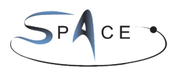
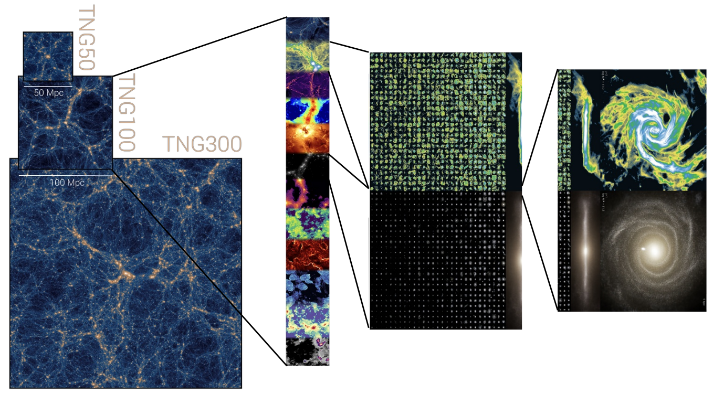
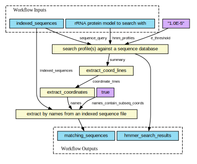
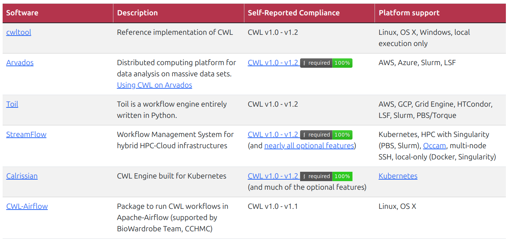
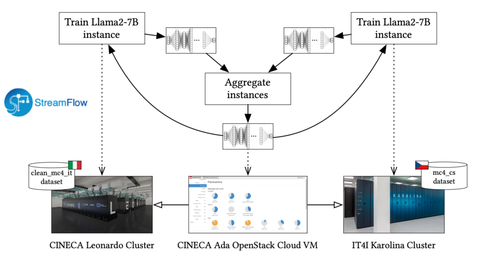
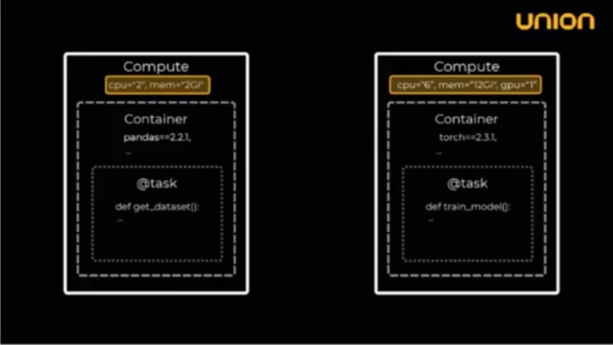
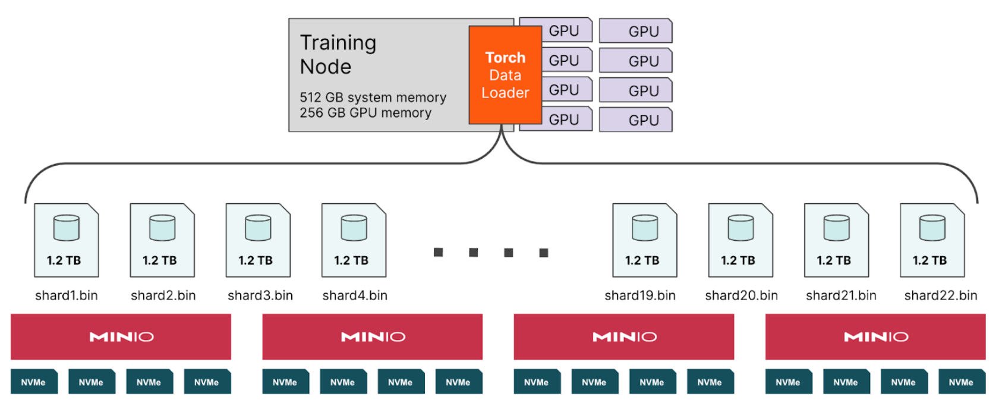

Machine Learning Workflow Orchestration
Flyte & StreamFlow
October 2024
Agenda
- Introduction to Workflow Orchestration
- Solutions for Workflow Orchestration
- StreamFlow
- Flyte
- Infrastructure for Machine Learning Workflows
- HPC vs AI/ML
- File vs Object Storage
Motivated by SPACE CoE

Goal: Astrophysical simulations for exascale computing
Challenge: Analyze large-size simulation data (~ Petabytes)
Solution: Efficient ML-based workflows using dimensionality reduction
Input

Simulation Data (~ Petabytes)
Time snapshots storing particle positions, velocities, and other properties, e.g. from OpenGADGET (IllustrisTNG)
Workflow

Why Workflow Orchestration?
- Reproducibility: Ensure your experiments are reproducible by tracking the code, data, model, and environment.
- Resource management: Manage resources efficiently by running tasks in parallel and optimizing resource usage.
- Scalability: Scale your workflows to handle large amount of data and complex pipelines.
- Monitoring: Track the progress of workflows and monitor their performance and results.
- Collaboration: Enable collaboration between team members by sharing code, data, and results.
Requirements on Workflow Orchestration
- Define execution requirements (e.g. GPUs, CPUs, memory)
- Control runtime environment with containers
- Orchestration features
- Parallelization: Run independent tasks automatically in parallel
- Caching: Avoid recomputing successful tasks
- Nesting: Reuse workflows as tasks
- Looping: Repeat tasks based on conditions
- Scattering: Distribute data to multiple tasks
- Conditionals: Branching based on conditions
Machine Learning Workflow Example

Options to Generate a Workflow
- General purpose programming languages (e.g Python)
- Domain specific language (e.g. Common Workflow Language)
- Graphical user interface (e.g. ReactFlow @ fal.ai)
StreamFlow
StreamFlow
- StreamFlow is a general framework for workflow orchestration
- Relies on the Common Workflow Language (CWL)
and connects the CWL with a deployment model - Workflows can be deployed to different environments:
- Containers / Singularity
- Slurm
- Kubernetes
Note
BioExcel Building Blocks is a great example using CWL for biomolecular simulation.
Common Workflow Language (CWL)
workflow.cwl
class: Workflow
inputs:
epochs: int
train_dataset: Directory
eval_dataset: Directory
train_script: File
eval_script: File
outputs:
model:
type: File
outputSource: train/model
accuracy:
type: string
outputSource: eval/accuracy
steps:
train:
run: train.cwl
in:
train_script:train_script
epochs:epochs
dataset:train_dataset
out:
- model
- loss
evaluate:
run: eval.cwl
in:
eval_script:eval_script
dataset:eval_dataset
model:train/model
out:
- accuracy
- Declare the workflow in a YAML file
inputsoutputssteps
- Inputs and outputs are passed between steps and must be compatible
- Workflows can be shared and reused
Common Workflow Language (CWL)
workflow.cwl
class: Workflow
inputs:
epochs: int
train_dataset: Directory
eval_dataset: Directory
train_script: File
eval_script: File
outputs:
model:
type: File
outputSource: train/model
accuracy:
type: string
outputSource: eval/accuracy
steps:
train:
run: train.cwl
in:
train_script:train_script
epochs:epochs
dataset:train_dataset
out:
- model
- loss
evaluate:
run: eval.cwl
in:
eval_script:eval_script
dataset:eval_dataset
model:train/model
out:
- accuracy
train.cwl
class: CommandLineTool
baseCommand: [python]
inputs:
train_script:
type: File
inputBinding:
position: 1
dataset:
type: Directory
inputBinding:
position: 2
prefix: --dataset
epochs:
type: int
inputBinding:
position: 2
prefix: --epochs
outputs:
model:
type: File
outputBinding:
glob: state_dict_model.pt
loss:
type: string
outputBinding:
glob:
Visualizing CWL Graphs

CWL Implementations in Production

StreamFlow Architecture

StreamFlow Deployment
StreamFlow: Federated Learning

StreamFlow Demo
Flyte
Flyte
- Flyte is a highly scalable cloud-native workflow orchestration platform on top of containers and kubernetes
- Member of the Linux Foundation AI & Data
- Strongly typed interfaces make it robust
- Supports a wide range of programming languages
- Data visualization and monitoring tools (FlyteDeck)
- Large community and active development
Flyte Test Setup

Thanks to Martin Wendt (ITS) for providing a comprehensive testing setup including Kubernetes (k3s), Flyte, and MinIO.
Flyte Command-line Interface
- Start a demo cluster on your local machine
- Create a new project
- Manage workflows, tasks, and executions
Flyte Concepts
- Project: A collection of workflows, tasks, and executions
- Domain: Deployment level (
development,staging, andproduction) - Workflow: A collection (directed acyclic graph) of tasks
- Task: Fully independent unit of work
- Execution: A run of a task or workflow
- Launch Plan: A scheduled execution of a workflow
Flyte Tasks
- Tasks are strongly typed (see Flyte Type Mapping)
- Tasks are regular Python function decorated with
@task - Tasks are designed to be idempotent (multiple executions don’t change the result).
Flyte Workflows
Workflows are used to structure the task execution graph
@task
def generate_processed_corpus() -> List[List[str]]:
@task
def train_word2vec_model(training_data: List[List[str]], hyperparams: Word2VecModelHyperparams) -> model_file:
@task
def train_lda_model(corpus: List[List[str]], hyperparams: LDAModelHyperparams) -> Dict[int, List[str]]:
@task
def word_similarities(model_ser: FlyteFile[MODELSER_NLP], word: str) -> Dict[str, float]:
@task
def word_movers_distance(model_ser: FlyteFile[MODELSER_NLP]) -> float:
@workflow
def nlp_workflow(target_word: str = "computer") -> [Dict[str, float], float, Dict[int, List[str]]]:
corpus = generate_processed_corpus()
model_wv = train_word2vec_model(training_data=corpus, hyperparams=Word2VecModelHyperparams())
lda_topics = train_lda_model(corpus=corpus, hyperparams=LDAModelHyperparams())
similar_words = word_similarities(model_ser=model_wv.model, word=target_word)
distance = word_movers_distance(model_ser=model_wv.model)
return similar_words, distance, lda_topicsContainerized Tasks
A Flyte task operates within its own container and runs on a Kubernetes pod
Container Image Specifications
- Customize the container image without a Dockerfile
- Container image is build at registration and pushed to a container registry
FlyteConsole (WebUI)
- Launch and relaunch tasks and workflows
- View versioned tasks and workflows
- Inspect executions through inputs, outputs, logs, and graphs
- Clone and recover executions
Flyte Demo
Summary I
StreamFlow
Pros
- Common workflow language (CWL)
- Supports deployment on Slurm and Kubernetes
- No special infrastructure setup needed
Cons
- Input and output bindings are redundant and error-prone
- Monitoring and visualization tools are outdated and not user-friendly
Flyte
Pros
- General-purpose workflow orchestrator leveraging Kubernetes
- Robust task interconnections with static typing
- Data pipeline driven by object storage
- Advanced monitoring and visualization features
Cons
- Requires migration of compute nodes from Slurm to Kubernetes
Infrastructure for Machine Learning Workflows
The background image was generated with FLUX on fal.ai
using the prompt ‘Visualize two worlds showing the difference between HPC and AI infrastructure’
HPC vs AI/ML Infrastructure
HPC workload
Simulations, modeling, and data analysis
Large clusters of CPUs and high-speed interconnects
Parallel computing (MPI)
Scheduling with Slurm
Bare-metal compilation
Distributed file storage
AI/ML workload
Training and inference of models
Data-intensive tasks
Numerous Matrix operations requires accelerators (GPU, TPU, ..)
Cloud-native deployment
Kubernetes and containers
Object storage
Hardware and software requirements differ significantly based on the nature of their workloads and infrastructure.
Storage Types
File Storage
- Hierarchical structure in files and directories
- Net-File-System (NFS)
~ 1-4 GB/s (READ)
Block Storage
- Data is divided in uniformly sized blocks
- Local SSD / NVMe (limited capacity)
- Can be distributed in storage-area network (SAN), but expensive
~ 5-10 GB/s (READ)
Object Storage
Unstructured data (eg, images, videos, logs)
RESTful API (cloud-native)
S3 (AWS), MinIO
Objects can’t be modified
~ 50 GB/s (GET, MinIO benchmark, 8 storage nodes)
Can be scaled up to TB/s
 MinIO Object Storage
MinIO Object Storage
- MinIO is a high-performance, open source object storage system
- The API is compatible Amazon S3 cloud storage service

Summary II
- HPC and AI/ML workflows have different requirements to the infrastructure
- Object Storage is a scalable storage solution for unstructured data and provide fast access to large files
- MinIO is an open-source object storage solution that can be deployed on-premises
Questions?

ML Workflow Orchestration (Bernd Doser, HITS)